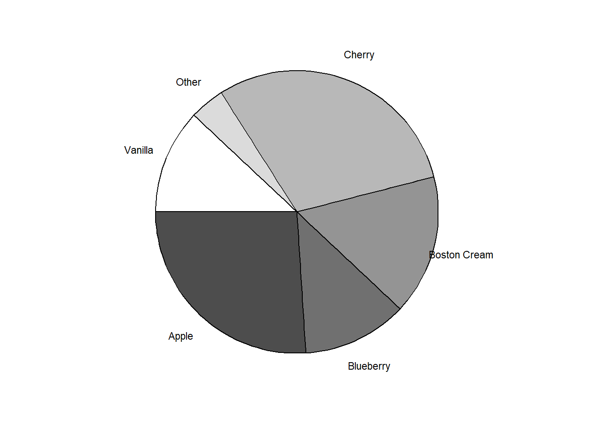

library(ggplot2)
# Creating the data frame with the data: proportion of prefered pie flavors)
sales <- data.frame(
flavor = c("Blueberry", "Cherry", "Apple", "Boston Cream", "Other", "Vanilla"),
prop = c(0.12, 0.3, 0.26, 0.16, 0.04, 0.12)
)
# Keeping the original order of the flavores (to keep ggplot from sorting
# alphabetically)
sales$sabor <- factor(sales$flavor, levels = sales$flavor)
# Plotting
# Ggplot2 has no pie chart. We need to create a col chart and roll it in
ggplot(sales, aes(x = 1, y = prop, fill = flavor)) +
# Plotting a single stacked bar
geom_col(width = 1, color = "black",
position = position_stack(reverse = TRUE)) +
# Placing each flavor's name on the outside and middle of each slice
geom_text(aes(x = 1.7, label = sabor),
position = position_stack(vjust = 0.5, reverse = TRUE), size = 3) +
# Wrapping the bar in a circle, from 3 o'clock and spinning anti-clock
coord_polar(theta = "y", start = pi / 2, direction = -1) +
# Using 6 shades of gray from 0.3 to 1 where 1 is totally white
scale_fill_manual(values = gray(seq(0.3, 1.0, length = 6))) +
# Removes the axes, the background and legends
theme_void() +
theme(legend.position = "none")